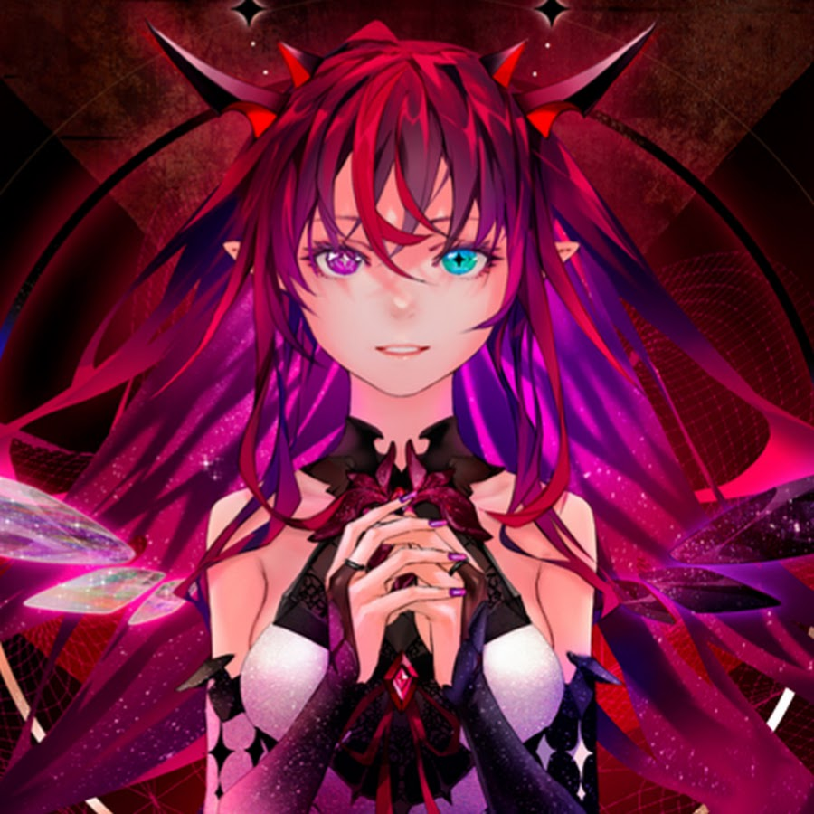
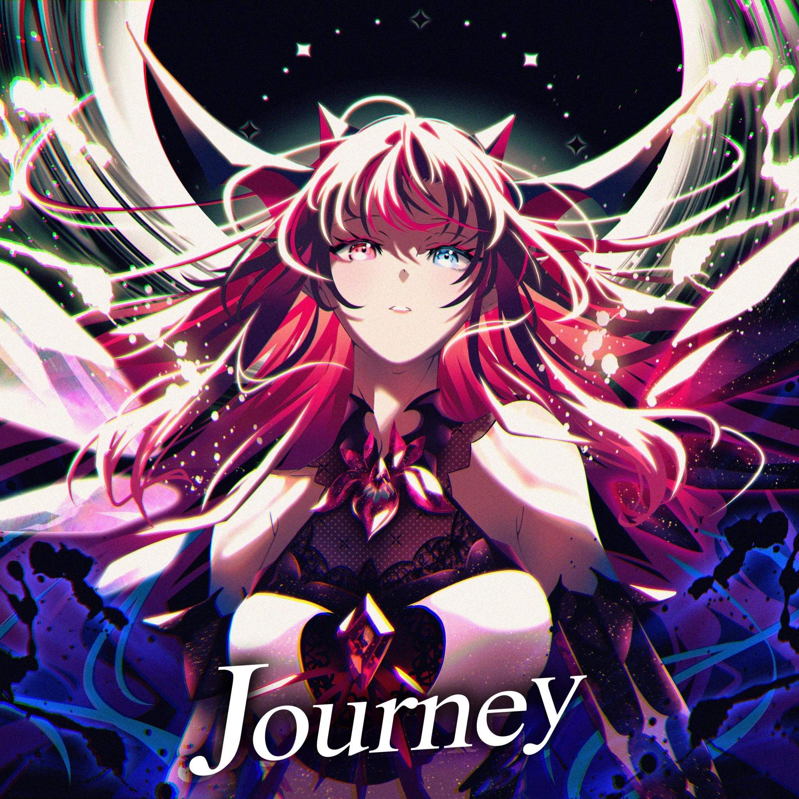
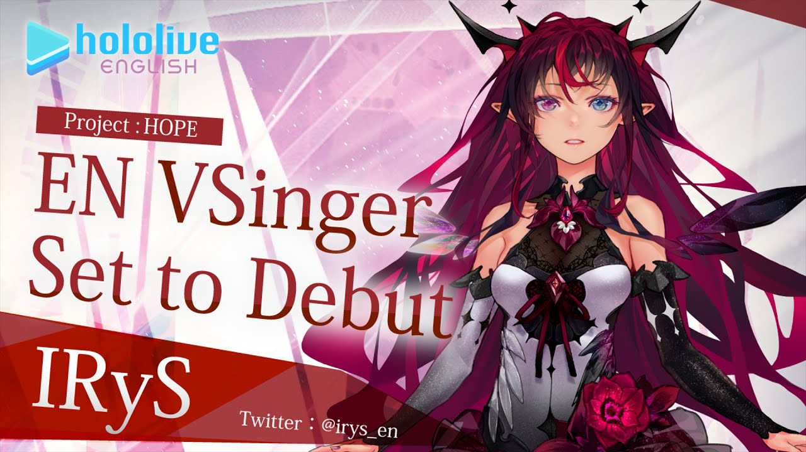

Debut Date YouTube: 2021/07/11
Birthday: 7 March
Zodiac Sign: Pisces
Height: 166 cm (with heels)
Emoji: 💎
Nickname(s):
YabaIRyS
Character Designer:
Illustration: redjuice
Modelling: rariemonn

Diva of hololive English Project: HOPE IRyS
IRyS, a half-demon, half-angel also known as a Nephilim, once brought hope to "The Paradise" during the ancient age. Her full name is ███████ Irys. This current era, riddled with despair and desperation, has brought upon her second awakening. She has arrived to deliver hope, with her feelings put into her lyrics and songs, and determination in her voice.
Though she tends to retain her Nephilim form, she is still quite young within her race. With emotion and "other factors," it is possible that her form may lean to either side. When that occurs, she bears a brief change in her appearance. She does not speak of the events that preceded her second awakening. She faces ever forward, perhaps because she is Hope Incarnate, though no one knows for sure. Or could it be...
"The future is not what helps people; the future is made with our own hands. Salvation is hypocrisy. If people know they are to be saved, they simply will not try.
From the depths of despair: a glimmer of light, the warmth of recovery.
As long as we are with hope, we live. We stand tall."
Personality
IRyS is a sweet, somewhat shy girl who holds positivity close to her heart, looking on the brighter side of things while encouraging others to do the same. At the same time, she often displays a more "sadistic" side with a penchant for violence and (often unintentionally) saying questionable things. The duality of her personality is often joked about by her fans as the dichotomy between her angelic and demonic sides.
Her speaking voice is high-pitched, soft and calm, akin to Yukihana Lamy's, though she can produce a more powerful and deeper tone when singing, similarly to Tokoyami Towa's vocal capability.
[IRyS]- Useful Link
- Youtube Channel

- Debut Stream
 - Twitter